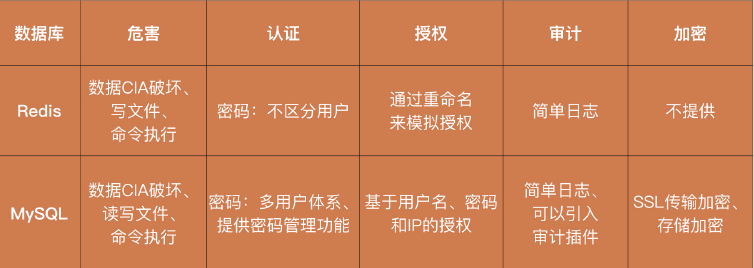

安全攻防技能
16 | 数据库安全：数据库中的数据是如何被黑客拖取的？
Redis 安全
Redis 的设计初衷是在可信的环境中，提供高性能的数据库服务。因此，Redis 在设计上没有过多地考虑安全性，甚至可以说它刻意地牺牲了一定的安全性，来获取更高的性能。
如何攻击
- 黑客通过一个简单 FLUSHALL 命令，清空整个Redis的数据
- 黑客还可以发起权限提升，通过 Redis 在服务器上执行命令，从而控制整个服务器
如何防护
从认证看
- 设置一个足够强的密码，推荐随机生成一个 32 位的“数字加字母”的密码，而且 Redis 的密码直接保存在配置文件当中，你并不需要记忆它，需要的时候直接查看
就好了。 - Redis 是为了高性能而设计的。之所以 Redis 默认不配置密码，就是因为密码会影响性能。
- 经测试，加上密码之后，Redis 的整体性能会下降 20% 左右。这也是很多开发和运维，明明知道 Redis 有安全风险，仍然保持无密码状态的原因。所以，是否
给 Redis 设置密码，还需要你根据实际的情况进行权衡。
- 设置一个足够强的密码，推荐随机生成一个 32 位的“数字加字母”的密码，而且 Redis 的密码直接保存在配置文件当中，你并不需要记忆它，需要的时候直接查看
从授权看
- 尽管 Redis 本身不提供授权机制，但是我们仍然可以通过“重命名”来间接地实现授权功能。我们可以在 Redis 的配置文件中加入 rename-command CONFIG
pUVEYEvdaGH2eAHmNFcDh8Qf9vOej4Ho，就可以将 CONFIG 功能的关键词，变成一个随机的字符串，黑客不知道这个字符串，就无法执行 CONFIG 功能了。而且，你仍然可以通过新的命令，来正常的使用 CONFIG 功能，不会对你的正常操作产生任何影响。
- 尽管 Redis 本身不提供授权机制，但是我们仍然可以通过“重命名”来间接地实现授权功能。我们可以在 Redis 的配置文件中加入 rename-command CONFIG
从审计看
- 因为Redis 只提供了基本的日志功能，实用信息不多，也就没有太多的应用价值。
“最小权限原则”
- 避免使用 ROOT 权限去启动 Redis
除了认证和授权，如果你还想要对 Redis 中的数据进行加密，那你只能够在客户端中去集成相应的功能，因为 Redis 本身不提供任何加密的功能和服务。
总结
- 总结来说，Redis 是一个极度看重性能的数据库，为了性能舍弃掉了部分的安全功能。我们可以通过“增加密码”“使用最小权限原则”和“授权”的方式，在一定程度上提升 Redis的安全性。但是，这些防护手段更多的是一种缓解机制，为了保证安全性，我们最好是只在可信的网络中使用 Redis。
MySQL 安全
黑客的攻击方式
- 因为 MySQL 的功能十分强大，自身就提供了和本地文件交互的功能。所以，通过 LOAD DATA INFILE，MySQL 可以读取服务器的本地文件；通过 SELECT … INTO DUMPFILE，MySQL 也能够将数据写入到本地文件中。因此，在黑客连入 MySQL 之后，通过读文件的功能，黑客就能够对服务器的任意文件进行读取，比如敏感的 /etc/passwd 或者应用的源代码等；通过写文件的功能，则可以仿照 Redis 修改 Crontab 的原理，实现命令执行的功能。
如何防护
从认证看
MySQL 提供了多用户的认证体系，它将用户的相关信息（认证信息、权限信息）都存储在了 mysql.user 这个系统表中。利用这个系统表，MySQL 可以通过增删改查操作，来定义和管理用户的认证信息、权限列表等。
除此之外，在认证上，MySQL 还提供了比较完善的密码管理功能
- 密码过期，强制用户定期修改密码；
- 密码重用限制，避免用户使用旧的密码；
- 密码强度评估，强制用户使用强密码；
- 密码失败保护，当用户出现太多密码错误的尝试后锁定账户。
从授权看
MYSQL授权机制
- 主体（user@“127.0.0.1” IDENTIFIED BY “password”）：MySQL 的主体是通过用户名、IP 和密码这三个信息组合起来进行标记的。
- 客体（db.table）：MySQL 的客体是数据库和表。
- 请求（ALL PRIVILEGES）：MySQL 将请求的类型定义成了特权（PRIVILEGES）。常见的特权有 INSERT、DELETE 等增删改查操作
从审计看
- MySQL 本身也不提供审计功能。但是，MySQL 可以通过第三方插件，来提供审计的服务。比如 McAfee 提供的 mysql-audit 以及 MariaDB Audit Plugin。这些插件能够自动收集必要的 MySQL 操作信息，并推送到你的 ELK 等日志集群中，方便你进行持续的审计操作。
比较图
- 
17 | 分布式安全：上百个分布式节点，不会出现“内奸”吗？
18 | 安全标准和框架：怎样依“葫芦”画出好“瓢”？
背景
- 在国外，比较知名的安全标准和框架包括：ISO27000 系列、NIST、COBIT 和 ITIL。接下来，我们一一来讲。
等保（等级保护制度）
介绍
- 等级保护根据公司的安全性高低，划分了由一到五这五个等级。每个等级都有需要满足和达标的安全要求。等级越高说明公司的安全水平越高，越被政府认可。安全等级三级以上的公司，还会受到国家信息安全监管部门的监督和检查。
安全要求分类
技术要求
- 安全物理环境、安全通信网络、安全区域边界、安全计算环境、安全管理中心；
管理要求
- 安全管理制度、安全管理机构、安全管理人员、安全建设管理、安全运维管理。
ISO27001
介绍
- ISO27001 是国内比较流行的安全评估认证之一。
提出了 11 个不同的安全方向
- 安全策略；信息安全组织；人力资源安全；资产管理；访问控制；密码学；
物理和环境安全；操作安全；通信安全；系统获取、开发和维护；供应关系；信息安全事件管理；业务连续性管理中的信息安全考虑；符合性；
- 安全策略；信息安全组织；人力资源安全；资产管理；访问控制；密码学；
ISO 的一系列框架和标准其实都遵循 PDCA 流程
Plan：计划，确定安全的目标并制定建设的规划。
- 例子
- 认证机构会先到公司进行调研和培训，然后和公司一块制定一个详细的安全规划。
Do：执行，按照计划的内容和时间来执行。
- 例子
- 公司会花几个月的时间，去执行这些规划。
Check：检查，对执行的结果进行总结，看是否符合预期。
- 例子
- 完成之后，认证机构再次去公司进行回访，评估完成的情况。
Action：改进，如果执行不符合预期，或者计划出现纰漏，则进行分析和改进。
- 例子
- 如果达到预期，则通过认证；否则继续计划、执行、检查的操作。
NIST
介绍
- NIST 也被称为“美国版等保”。因为 NIST 是美国政府提出的，对公司的安全能力进行监督和管控的安全框架。但是，NIST 并未考虑公司在实施安全标准时需要付出的成本，所以除了美国政务之外，NIST 很少被使用。
IPDRR 方法
Identify（识别）
- 我们需要掌握公司有哪些 Web 应用，并对 Web 应用做威胁评估。
- 也就是说，我们需要定位公司的资产，衡量这些资产的价值，然后评估资产保护的优先级和投入成本。
Protect（保护）
- 我们要在安全事件发生之前，对数据和资产采取适当的保护措施。
Detect（检测）
- 在安全事件发生之中或者之后，我们要能及时发现和检测出安全事件或者攻击行为。这就需要对请求的日志和返回的结果进行分析，评估是否产生攻击行为和数据泄漏。
Respond（响应）
- 当检测到安全事件后，我们需要采取有效的措施，来阻止攻击的持续进行，尽可能地降低事件所带来的影响。
- 最可行的操作，就是对出现漏洞的Web 业务进行下线，对已经受到影响的数据进行隔离。这也要求我们制定好详细的应急预案，避免攻击发生时公司陷入手忙脚乱的无序状态。
Recover（恢复）
- 当事件响应完成后，我们要将应用或者服务恢复到攻击前的状态，也就是对应用和数据进行修复和重新上线。
纵深防御
- 即任何单点的安全策略都存在纰漏和被绕过的可能。因此，我们需要采取多重相互独立的安全策略，使得这些策略相互补充，降低安全策略被绕过的可能性。
19 | 防火墙：如何和黑客“划清界限”？
防火墙
防火墙是部署在网络边界上的一种安全设备，其概念比较宽泛，根据需求不同可以工作在OSI（Open System Interconnection，开放式系统互联） 网络模型的一层或多层上。一般情况下，防火墙会和路由器搭配使用（或者说路由器能够承担部分防火墙的功能），来对网络进行隔离。
防火墙类型
包过滤防火墙
- 包过滤防火墙工作在网络层和传输层上。在这两个层级中，网络请求都是以 TCP 或者 UDP数据包的形式进行流动的。因此，包过滤防火墙是通过检测并拦截所有流经防火墙的 TCP和 DUP 数据包，来对系统提供保护。它能够获取到的信息包括：源 IP 和端口、目标 IP 和端口、协议号等。由于大部分的路由器甚至 Linux 系统本身（Iptables）也具备类似的功能。因此，通常情况下，我们不需要采购额外的设备部署包过滤防火墙，只需要直接对网络边界的路由器进行设置，就能够满足最基本的拦截需求了。
- 但是，在防护能力上，包过滤防火墙是比较弱的，它只能提供最基础的安全防护。这是因为，包过滤防火墙的过滤规则基本都是静态的。也就是说，包过滤防火墙只能够通过匹配IP 地址和端口号，判断这些信息是否命中特定的规则来进行过滤。比如，禁止外网 IP 访问80 和 443 以外的公司 IP 端口。所以，现在大部分的包过滤防火墙都进行了升级，引入了诸如“连接状态”等概念，也就变成了状态检测防火墙。
应用网关防火墙
- 应用网关防火墙以代理的模式工作在应用层。所谓“代理”，即接收客户端发出的请求，然后以客户端的身份将请求再发往服务端。大部分的系统和应用都是工作在应用层的，因此，应用网关防火墙能够获取到系统和应用的全部信息，从而实现更复杂的功能，如：内容监控、认证、协议限制甚至缓存。
- 应用网关防火墙需要对 TCP 和 UDP 包进行解析，处理成应用层的数据协议，如 HTTP。因此应用网关防火墙对于网络的性能会产生负面影响，而且不是所有的应用都能够很好地兼容代理的存在，所以部署应用网关防火墙有可能对系统的可用性产生影响。除此之外，在应用网关防火墙中，服务端看到的请求都来自于代理，这会导致服务端无法有效地追踪请求的来源。
- 尽管应用网关防火墙有这些潜在的危害存在，但是它能处理的信息最多，能够提供的安全防护能力也最强。由于 Web 攻击是黑客常见的攻击手段，因此，应用网关防火墙也逐渐演变成了专门的 Web 防火墙
状态检测防火墙
- 状态检测防火墙是包过滤防火墙的一种升级，它同样工作在网络层和传输层之上。状态检测和包过滤防火墙最大的不同在于，它会以连接的形式来“看待”低层级的 TCP 和 UDP 数据包。
- 当客户端发起一次完整的 HTTP 请求时，会需要进行“TCP 三次握手”建立连接
（SYN+ACK 数据包），HTTP 请求和响应的数据往往也是通过多个数据包才能完整发送。传统的包过滤防火墙只能基于每一个数据包进行判断，比如在“握手”的过程中，包过滤防火墙会分别看到 SYN、SYN+ACK、ACK 这三个数据包，并对每一个数据包进行判断。而事实上，这三个数据包（SYN、SYN+ACK、ACK）代表的是一次握手请求。所以，状态检测防火墙会尝试将这一连串的数据包组成一次完整的连接请求，从而获得一个更全面的视角，大大提高其安全性。 - 对比应用网关防火墙，状态检测防火墙通常不会尝试将数据包构建成高层级的数据，也就是说它不会尝试去解析整个 HTTP 请求中的内容。因此，状态检测防火墙能获得更优的性能。目前市面上普遍采用的，都是状态检测防火墙。
- 图示
防火墙可以为网络边界提供哪些保护呢？
- 保护操作系统的漏洞
- 在一些操作系统漏洞曝光时，我们能即时更新操作系统补丁、关闭对应服务，那自然是能够避免系统和应用受到侵害。但是，在通常情况下，尤其是当公司扩大规模的时候，服务器管理员意识到问题并采取措施的这段响应时间，已经足够病毒或者蠕虫进行大规模地传播了。
- 这时，防火墙的存在就很有必要了。一方面，防火墙可以迅速对全网的服务器进行保护，拒绝向高危端口发起的请求，如 Windows 中的 135、137 和 445 等，这也就是我们之前所说的“虚拟补丁”。另一方面，更加智能的防火墙，能够检测到整体流量中的异常变化，比如，突然出现了针对某个端口的大量请求，这就说明系统或者应用中很可能出现了新的漏洞，这时，防火墙可以产生报警甚至自动对异常的请求进行拦截，及时避免网络中的操作系统受到攻击。
- 阻止非法的信息流动
- 在网络边界之间流动的数据，往往都会受到一定的规则约束。最著名的有中国的防火长城（Great Firewall）。防火长城的主要目的不是为了防止国外对中国发起网络攻击，而是根据法律法规，防止国内网民访问国外违法的数据信息。
- 除了防止非法地获取数据，防火墙同样能够防止敏感数据的流出。比如，防火墙可以对部分关键词或者敏感词进行检测阻止其外流。
- 需要注意的是，防火墙能够提供的数据安全保护是有限的。原因在于，大部分防火墙都是用来处理较低层级的数据，且很多连接会对数据本身进行加密（VPN、HTTPS）。这就导致了防火墙实际能够看到的可识别数据并不多，拦截能力因此下降。其实，这种绕过防火墙的例子很常见，各类“梯子”能翻墙访问 Google 就是基于这个原理实现的。
- 限制可访问的服务和审计
- 防火墙作为安全策略的一部分，还可以帮助公司落地安全制度。公司所有对于网络方面的限制和要求，基本都可以在防火墙上进行实现。比如：限制外网开放的服务只能是 HTTP 服务，那么所有非 HTTP 的请求就会被拦截；再比如，防火墙也可以对带宽的使用进行限制，避免某个服务抢占全部的带宽资源。
- 除此之外，防火墙作为网络安全设备，它的日志功能通常比路由器等常规网络设备更加完备。因此，在网络攻击发生之后，我们需要进行事件调查时，防火墙日志是很关键的信息来源。
防火墙的盲区
- 不能防御已授权服务中的恶意攻击
- 不能防御不通过防火墙的访问
- 不能防御防火墙自身操作系统存在的缺陷
20 | WAF：如何为漏洞百出的Web应用保驾护航？
背景
- 随着 Web 应用越来越多，黑客的攻击目标也逐渐转向了针对 Web 安全的攻击。传统的防火墙主要专注于网络层的攻击防御，对 Web 安全的防御能力相对欠缺。因此，WAF（Web Application Firewall，Web 应用防护系统）的概念也就被提了出来。WAF 说白了就是应用网关防火墙的一种，它只专注于 Web 安全的防御，近几年来逐渐被当成一个相对独立的产品方向来研究。
WAF 的工作模式
WAF 的三种工作模式分别是：透明代理、反向代理和插件模式。
透明代理
图示
在客户端和服务端通信不需要作出任何改变的情况下，对 HTTP 流量进行请求和转发。在这个过程中，为了解密 HTTPS 流量，WAF 必须和服务端同步 HTTPS 对称密钥。
透明代理的优点就是容易部署，它不需要客户端和服务端进行任何改动。
但是，透明代理的缺点也有很多。透明代理本身不是一个 Web 服务，所以它无法修改或者响应 HTTP 的请求，只能够控制请求的通过或者拒绝。正因为如此，它也无法实现 Web 服务所提供的认证、内容过滤等功能。
反向代理
图示
区别于透明代理，反向代理要求客户端将请求的目标地址指向 WAF，而不是服务端。
在反向代理工作模式中，服务端接收的请求，实际上也是由 WAF 发起的。在这个过程中，WAF 本身就相当于一个 Web 服务，只不过对所有的 HTTP 请求都进行了转发。
因为反向代理 WAF 本质上是一个 Web 服务，所以 HTTPS 证书可以直接部署在 WAF上。WAF 在对 HTTPS 流量解密之后，就可以在内网中用 HTTP 的形式，向服务端发起代理请求了。
而且，反向代理 WAF 作为一个 Web 服务，能够提供的功能也更加丰富。比如，WAF 可以充当一个前置的认证平台，对所有请求进行身份校验和身份管理。同时，也因为在反向代理工作模式中，客户端和服务端不直接通信，而是将全部请求都先请求到 WAF 上，所以反向代理 WAF 对服务端的隔离也更加彻底。
但是，反向代理同样存在缺点。首先，功能更丰富意味着性能开销更大。因此，反向代理WAF 对硬件要求更高。其次，反向代理 WAF 一旦宕机，就无法响应客户端的任何请求。这样一来，即使服务端仍然正常，但用户已经无法正常使用应用了。而对于透明代理 WAF来说，如果 WAF 宕机了，只是无法提供 Web 防护而已，客户端和服务端的通信不会受到任何影响。
插件模式
图示
在插件模式中，WAF 不再是网络中一个独立的安全产品了，而是以插件的形式依附于 Web 服务端本身，为 Web 安全提供防护。
通过AOP 技术中，WAF可以作为一个切片植入到服务端的逻辑中。
目前 AOP 技术十分流行，各类编程语言都支持。所以，插件模式的 WAF 部署同样十分简单。但是，这种将 WAF 和服务端强耦合的方式，会带来一定的负向影响。首先，WAF 和服务端一块工作在服务器上，会消耗服务器额外的资源，对 Web 服务本身的性能产生影响。其次，WAF 和服务端耦合，也就意味着 WAF 的所有改动都会直接影响到服务端。对于代理模式的 WAF 来说，通常只需要自测就可以升级了。而对于插件模式的 WAF，它本身的升级必须和服务端一起进入评估和测试流程，就会增加额外的工作量。
比较
WAF 的功能
- HTTP 解析能力
WAF 专注于 Web 安全。因此，对 HTTP 请求进行解析是 WAF 最基础的能力。在 HTTP 中，通用的内容包括：请求的 URL 以及其中的参数、HTTP 头部信息、POST 的 body 内容等。
除此之外，某些攻击特征可能隐藏得比较深，比如 JSON 中的某个字段，无法通过 JSON的整体内容检测出来，我们必须一个字段一个字段去判断。因此，WAF 还需要解析 XML、JSON 等 RPC 传输协议，能够理解对应的 key 和 value 分别是什么。
除了单纯地解析内容，WAF 还需要对 HTTP 内容做必要地处理。这是因为：
- 第一，HTTP 中的内容可能经过了 UrlEncode 等编码方式的处理，因此，WAF 需要具备解码能力，避免攻击的特征通过编码来进行绕过。
- 第二，想要看到 HTTPS 中的加密内容，WAF 必须能够解密 HTTPS 请求。在透明代理模式中，WAF 需要和服务端同步 HTTPS 的密钥，才能够获得解密的请求；在反向代理中模式中，WAF 自带证书，可以直接解密；在插件模式中，WAF 依靠服务端解密请求之后，再进行 HTTP 的解析。
- Web 安全防护
通过对 HTTP 请求进行解析、对编码内容进行解码和对 HTTPS 进行解密之后，WAF 就能够获得全部 HTTP 请求内容了。在此基础之上，WAF 就可以对请求内容进行分析，为Web 服务提供安全保护了。
三种主要的分析手段
签名匹配
- 和杀毒软件中病毒库的概念类似，WAF 也可以维护一个攻击样本库。样本库中存有已知攻击请求的散列签名，只要 HTTP 请求内容的散列签名在这个样本库，就说明 HTTP 请求中携带了攻击内容。
正则匹配
- 签名匹配需要请求完全一致才能够检测出来，而正则匹配只需要部分特征就可以检测。WAF 可以通过抽象一些攻击特征的正则表达式，对 HTTP 请求进行检测。比如，如果请求的某个参数中出现了单引号，那么很有可能就是黑客发起的 SQL 注入攻
击。
- 签名匹配需要请求完全一致才能够检测出来，而正则匹配只需要部分特征就可以检测。WAF 可以通过抽象一些攻击特征的正则表达式，对 HTTP 请求进行检测。比如，如果请求的某个参数中出现了单引号，那么很有可能就是黑客发起的 SQL 注入攻
行为分析
- 除了针对单次请求的分析之外，WAF 还可以针对连续的访问请求特征进行提取和分析。很多时候，我们无法准确判断单次请求是不是攻击请求，但是如果疑似的攻击请求频繁出现，我们就基本能够确定了。也就是说，一个用户不会频繁地访问同一个页面，而黑客需要对一个漏洞点发起多次尝试，才能够实现攻击的效果。
在识别到攻击的请求之后，WAF 就可以对请求进行拦截，从而避免 Web 服务受到黑客的攻击了。
- 审计告警
- Web安全相关的审计包括：发生攻击的时间、路径、频次等。通过这些信息，开发人员能够知道自己的 Web 服务面对的攻击威胁是什么样的，也就能够更好地评估威胁，完善 Web 安全防护机制。
- 除此之外，WAF 还能提供其他的审计能力。这是因为，WAF 能够解析出 HTTP 请求的全部内容，提供审计所需要的全部日志字段。这些日志可以是各个页面的访问次数、用户的访问行为和接口的响应性能等。尽管这些指标和安全没有太多关系，但是它们对于产品设计和服务质量来说都很常见，那么 WAF 就可以作为一个统计分析工具，来为你提供服务。
- 数据保护和虚拟补丁
- 反向代理或者插件模式的 WAF，还能够对 HTTP 请求中的数据进行一定的处理，提供额外的数据保护功能。
- 最简单的，WAF 可以加密 HTTP 响应中的 Cookie 内容，使得 Cookie 以保密的形式存储在浏览器中。当浏览器将加密后的 Cookie 附加到 HTTP 请求中的时候，WAF 又可以进行解密。这样一来，服务端接收到的始终是明文的信息，而实际上，WAF 通过加解密为Cookie 提供了额外的保护。另外，WAF 还可以对返回内容中的手机号、身份证号等敏感字段进行统一的打码处理，避免因为开发的疏忽，导致这些敏感信息的泄漏。
21 | IDS：当黑客绕过了防火墙，你该如何发现？
IDS
IDS 的最终目的是检测黑客的攻击行为。
两种类型
NIDS（Network Intrusion Detection System，网络入侵检测系统）
为什么需要NIDS
- 防火墙存在盲区：防火墙只能够检测穿越网络边界的流量，如果黑客已经进入到了内网，那防火墙就没办法提供任何的安全防护了。
NIDS 主要检测网络流量中的攻击行为。区别于部署在网络边界的防火墙，NIDS 一般部署在内网的网络节点（路由器或交换机）中，所有的网络请求都会流经这些网络节点，所以，NIDS 基本可以获取到对应网络节点下全部的网络行为。
另外，和防火墙不同的是，NIDS 一般不具备拦截网络请求的能力。这也让 NIDS 能够很好地隐蔽自己，让黑客很难发现。对于防火墙和 WAF 来说，黑客总是会不断尝试各种方式来绕过这些安全产品，原因就是黑客知道自己被拦截了。因此，这些安全产品需要不断地更新规则策略对抗黑客。如果黑客都不知道 NIDS 的存在，就不会刻意地去绕过 NIDS 的检测，这也使得 NIDS 的检测能力比较稳定，不需要频繁地更新规则策略。
例子
- NIDS 是一个比较经典的安全产品，你可以直接使用市面上的开源工具，比如：Snort、Suricata等。这些工具也依据 CVE 库开发了完整的入侵检测规则。以 Snort 的一条检测规则为例：
- 我们在使用 NIDS 的时候，只要注意及时对规则进行维护即可。从 Snort 的规则中，我们也可以看出，NIDS 的检测逻辑就是对请求的内容进行正则匹配，不具备分析上下文的能力。因此，NIDS 一般只能够对单次的攻击请求进行检测。
HIDS（Host-based Intrusion Detection System，基于主机型入侵检测系统）
HIDS 主要检测服务器系统中的攻击行为。
NIDS 运行在某个网络节点之上，相当于集中式的对网络流量进行检测，但是 HIDS 运行于每一个服务器中，也就相当于对系统行为进行分布式检测。
分布式的行为处理的好处
- 在 NIDS 中，我们是基于少量的网络节点检测全部的网络流量。而在 HIDS 中，只需要每个服务器检测各自内部的行为，也就相当于将资源消耗分散到了每一台服务器中，这就对硬件的性能要求比较低，也就节约了公司的防护成本。
另外，HIDS 一般以 ROOT 权限运行在操作系统中。因此，HIDS 能够监控的行为更丰富，比如：
- 执行的系统命令
- 发起和接受的网络请求
- 运行的进程、监听的端口号等
- 系统关键文件的完整性
- 其他黑客可能留下痕迹的地方
因为 NIDS 只需要部署在关键的网络节点上，一个公司可能也就有几百个这样的节点，而 HIDS 需要部署在公司所有的服务器中，一个公司有上万个服务器是很常见的事情。而且，我们会在日常使用中频繁改动服务器，这也使得服务器的系统环境很不统一。所以，很多公司都需要基于自己的情况自行开发HIDS。很多公司都会基于Osquery来开发 HIDS。Osquery 提供的信息采集功能可以满足大部分的 HIDS 需求，我们只需要运行一句简单的 SQL 语句，就能够拿到系统的关键信息了。
IPS（Intrusion Prevention System，入侵防御系统）
- 我们在 NIDS 和 HIDS 中加入了拦截的能力，就成了NIPS 和 HIPS，统称为 IPS（Intrusion Prevention System，入侵防御系统）。IDS 和
IPS 是相辅相成的，它们唯一的区别在于，IDS 强调的是检测，IPS 强调的是拦截。当发现了黑客的攻击行为后，IDS 会产生报警，然后公司的安全响应人员会对报警进行人工处理。IPS 同样会产生报警，不过报警的同时，IPS 会尝试对黑客的行为进行拦截，在第一时间限制攻击产生的影响范围。
防火墙、WAF、IDS 和 IPS 总结
22 | RASP：写规则写得烦了？尝试一下更底层的IDS
RASP 的原理
- RASP 的设计思路是通过监控应用的底层，来从根本上发现攻击行为的产生。
- 以 Java 为例，Java 应用运行在 JVM 之上。因此，JVM 就是一个底层，它能够看到所有的应用信息。我们可以通过 JavaAgent的形式将 RASP 运行在 JVM 上，然后借助Instrumentation技术 Hook 关键的类和方法。
- 图示
RASP 的优势和劣势
对比 WAF，RASP 有哪些优势和劣势
RASP 对比于 WAF 最大的优势在于 RASP 运行在应用的底层，从而能够知道应用运行时的上下文（比如：用户、代码逻辑、SQL 语句等）。在 Web 安全中，我们针对 Web 安全的攻击原理进行过总结：SQL 注入、反序列化等漏洞其实都是通过输入数据，篡改应用的正常逻辑实现的攻击。
对于 WAF 来说，它只能够判断出输入的数据“可能”会篡改应用的正常逻辑，因此 WAF的拦截决策都来源于这个可能性。而对于 RASP 来说，它知道应用的正常逻辑是什么，也知道应用接收输入后实际的逻辑是什么，如果实际逻辑和正常逻辑不一致，就必然发生了攻击。基于这种检测方式，RASP 基本不会产生误报或者漏报。
例子
- 以 OpenRASP 防止 SQL 注入的检测逻辑为例，来看一下 RASP 是如何进行检测的。算法描述如下：
- 以 OpenRASP 防止 SQL 注入的检测逻辑为例，来看一下 RASP 是如何进行检测的。算法描述如下：
其次，RASP 能够防范未知的攻击。对于 SQL 注入来说，它的注入点可以是某个 GET 参数、某个 POST 的 Body、某个 Header 字段等，具体的攻击方式也多种多样：盲注、基于Insert 的注入等。
WAF 的检测规则是一个一个去覆盖这些攻击点和攻击方式。如果黑客发现了某个新的攻击点或者使用了新的攻击方式，WAF 根本无法检测出来。
对于 RASP 来说，它实际上不关注具体的攻击点和攻击方式是什么，因为 SQL 注入攻击，最终都会使 SQL 语句 Token 化后的长度发生改变。因此，RASP 只需要判断执行的 SQL语句 Token 化后的长度即可。
RASP 还有一个比较特别的好处，就是基本不用维护规则。
在 Java 中，不论你是使用的哪种开发框架，最终执行 SQL 语句的都是底层的 JDBC
插件，在这个层次上，攻击的特征都是一致的。因此，RASP 基本只需要维护一套统一的规则和策略，就能够适用于所有的公司和应用了。劣势
推广难度
- 尽管我们一直在提安全，但是事实上，大部分的开发人员并不认可安全，他们也不接受任何可能对应用产生影响的安全产品。这是因为，这些安全产品增加了检测的逻辑，就必然会影响应用的正常运行。而且，WAF 等拦截性安全产品产生的误报，会让正常的业务请求受到影响。
部署难度
- 在部署一款 WAF 的过程中，实际上是不需要开发人员参与的，运维人员在网关上直接部署就可以了。而 RASP 不一样，RASP 和应用强耦合，它需要由开发人员去部署。比如，Java 中需要通过命令 java -javaagent:rasp.jar -jar app.jar 来启动 RASP，其中的参数javaagent 只能由开发人员进行配置。因此，RASP 的推广实际上是安全意识的推广，所以难度也比较高。
其他难度
- 其次，RASP 的解决方案并不通用。从语言支持上来看，目前 RASP 只在 Java、PHP和.Net 语言中具备成熟的产品。其他高级语言，如 Python 等，可能是因为没有很好的Hook 方案，所以目前仍然局限于研究阶段。这也是 RASP 强耦合所带来的弊端：每一种开发语言，甚至是语言下不同的开发框架，都可能会需要一套独立的 RASP 产品。而 WAF等安全产品，因为网络和系统都比较统一，则不受此限制。
性能问题
- 最后，RASP 在性能问题上也备受争议。尽管目前成熟的 RASP 产品宣称它的性能影响已经低于 5%，甚至更低了，但在实际落地的过程中，确实会出现因为系统和应用的差异，而导致性能恶化比较严重的情况。这也是 RASP 在兼容性不足上所表现出来的缺陷。
RASP 的其他功能
毫不夸张地说，WAF 能实现的功能，RASP 都能够实现。因此，WAF 中的数据保护、虚拟补丁等功能，RASP 也都能够提供，原理也是一致的：都是通过拦截并修改 HTTP 请求和响应，在 HTTP 内容中加入额外的安全特性，比如 Cookie 加密。
除此之外，因为 RASP 部署于应用的底层，知道应用的全部信息，所以它本身可以对应用的安全性进行评估。
- 是否使用 ROOT 权限运行了应用；
- 在连接数据库的时候，是否使用了弱密码；
- 使用了哪些插件，插件是否包含漏洞。